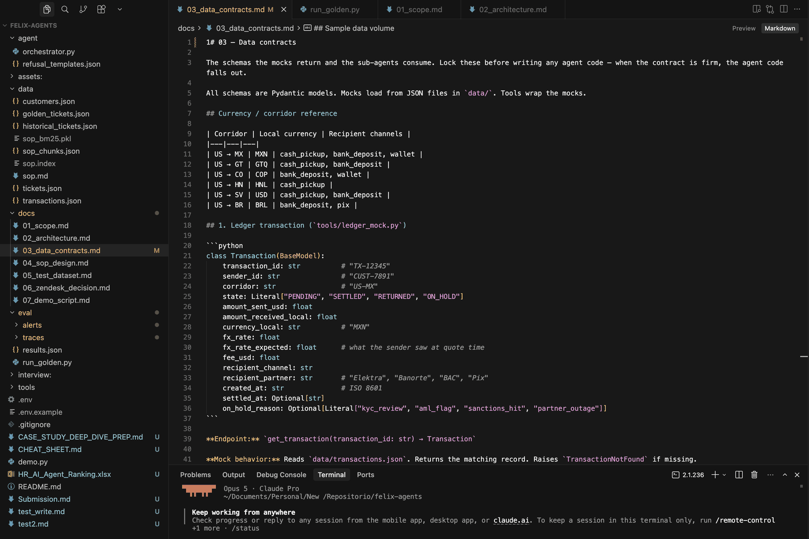
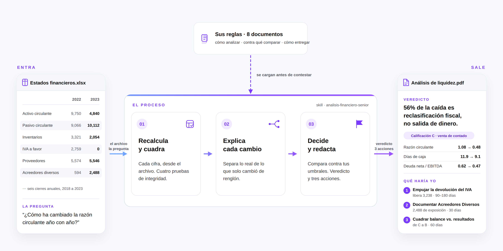
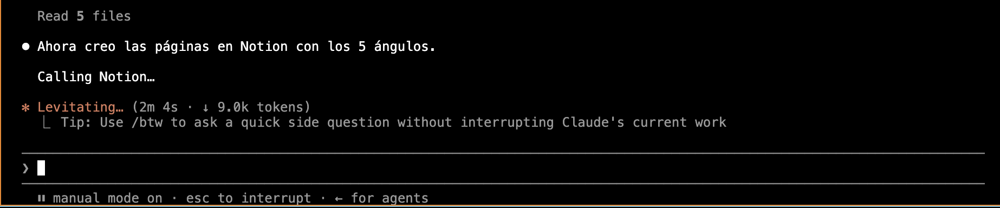
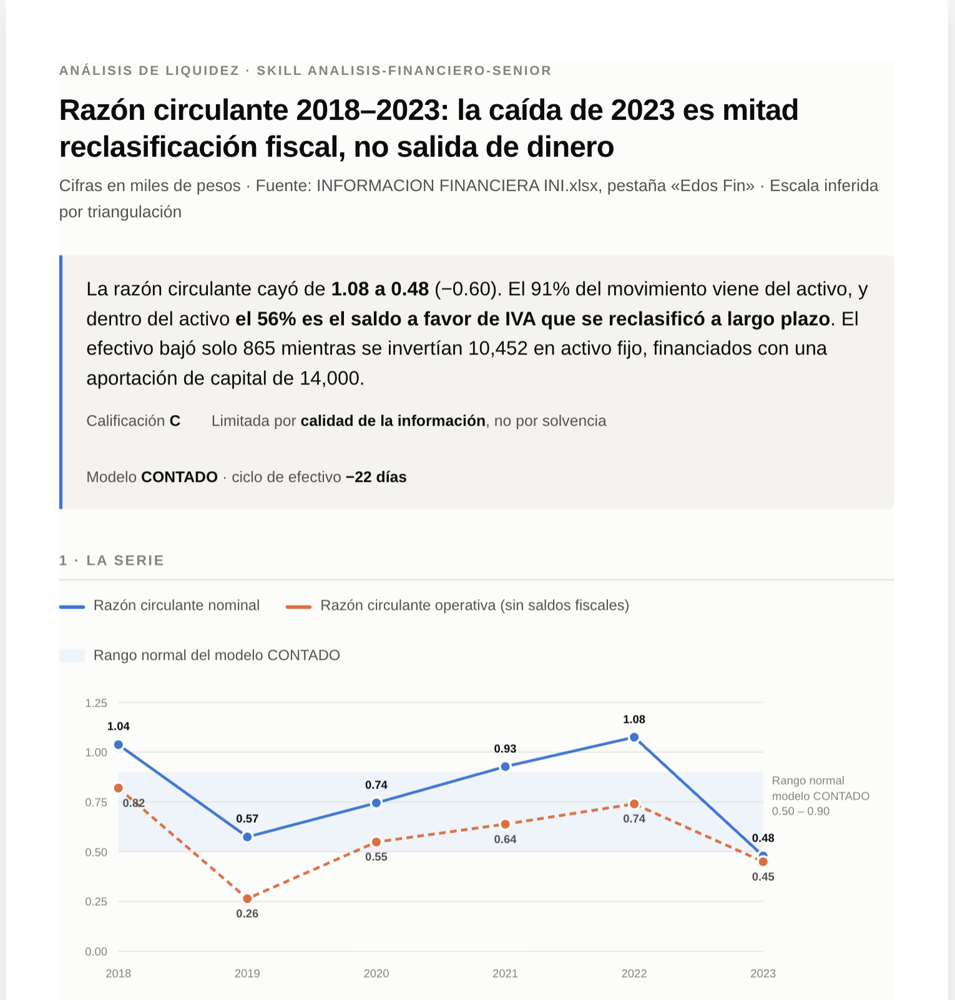

Cómo se usa en la práctica
El organigrama —personas asignadas a tareas— ya no es el mapa. El mapa es el proceso: qué entra, qué sale y qué de eso genera dinero. Rediseñas eso, y la IA ejecuta la parte que ya decidiste tú.



